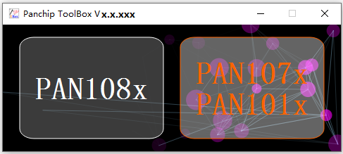
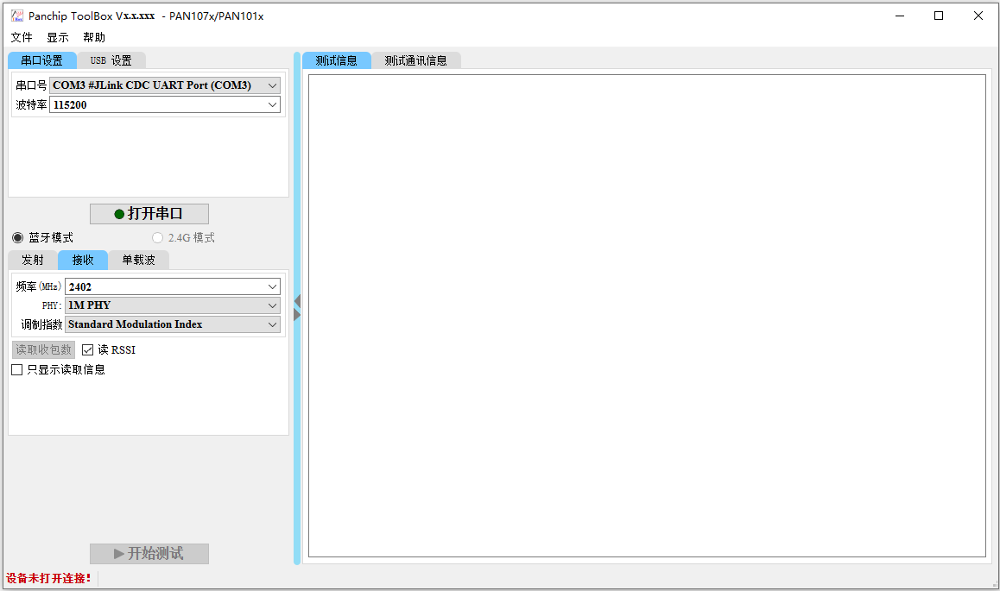

Panchip Toolbox 工具箱¶
Panchip Toolbox 是 Shanghai Panchip Microelectronics Co.,Ltd. 为 PAN107x/PAN101x SDK 提供的开发工具集合，目前包含如下功能：
进行简单的 RF 测试
使用 PAN107x/PAN101x 芯片检测当前环境信号强度并显示
PAN107x/PAN101x 芯片引脚
支持项目DFU固件升级
下载工具。
启动界面选择¶

启动界面选择 PAN107x/PAN101x 进入 PAN107x/PAN101x ToolBox 功能界面¶

PAN107x/PAN101x ToolBox 功能界面¶
1. RF 测试¶
使用此功能，配合 PAN107x /PAN101x 芯片 RF 测试固件。从工具的帮助->下载 RF 测试固件，从服务器下载最新版本 RF 测试固件。
支持通过串口通讯测试蓝牙的发射、接收收包数、单载波发射等功能。
支持通过串口通讯或 USB 通讯测试蓝牙的发射、接收收包数、单载波发射等功能。
支持通过 USB 通讯测试2.4G的单载波发射、跳频发射、发射、接收收包数等功能。
2.射频信号采集¶
使用此功能，配合 PAN107x/PAN101x 芯片射频信号采集固件，从工具的帮助->下载射频信号采集固件，从服务器下载最新版本射频信号采集固件。
3. 芯片引出脚¶
使用此功能，方便用户快速查看特定型号芯片引脚功能。 也可以对 PAN107x/PAN101x 特定型号芯片的引脚进行选择分配，导出分配报告，方便在应用中规划引脚。
4.DFU升级¶
使用此功能，可以通过 USB实现固件升级。
帮助¶
详细使用说明，可以点击软件菜单的 帮助->查看帮助文档。